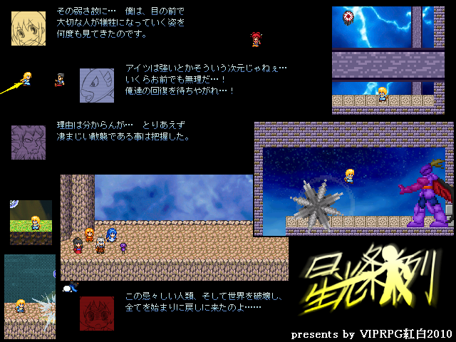

| No062. - 星光条例 |

全13ステージという自重無しの大ボリューム！
正直長過ぎて途中マンネリ化とか制作期間中に目が肥えてこの出来に
不満が募りまくりとか色々不安がありすぎて提出が怖くなってきた。
つーか無理して横スクアクション作った結果がこれだよ！的な感じ。
だが体験版出した以上もう後戻りはできぬぅ！
何とか手を施してはみるもののやはりキングクリムゾン発動したらごめんなさい。
最後に、次はもっと親切設計で作ろう。
| ◆VIPRPG2010 |
|
|||
 |
|||
| 使用ツール：2000 | |||
| 作者：Axel ◆0sEA5r5t6Y | |||
| ジャンル：アクション | |||
全13ステージという自重無しの大ボリューム！ 正直長過ぎて途中マンネリ化とか制作期間中に目が肥えてこの出来に 不満が募りまくりとか色々不安がありすぎて提出が怖くなってきた。 つーか無理して横スクアクション作った結果がこれだよ！的な感じ。 だが体験版出した以上もう後戻りはできぬぅ！ 何とか手を施してはみるもののやはりキングクリムゾン発動したらごめんなさい。 最後に、次はもっと親切設計で作ろう。 |
|||
| 管理人コメント：ボリューム感がひしひしと伝わってくるぜ！ | |||
| ダウンロード(11.4MB) / 感想掲示板 | |||
| ◆ vipkohaku2010_1|/ﾟUﾟ|yahoo.co.jp |